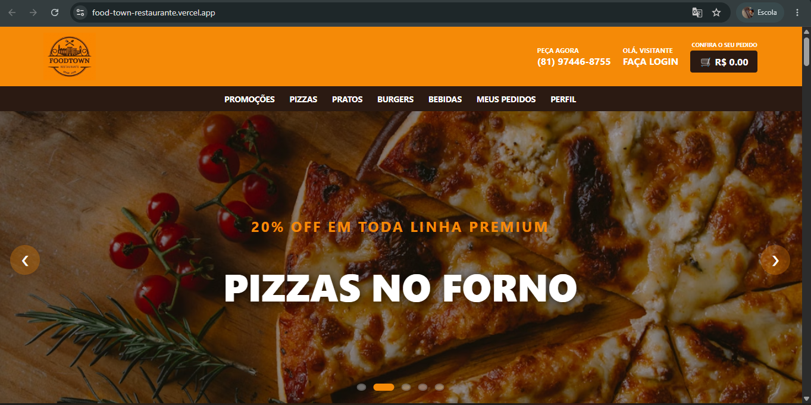
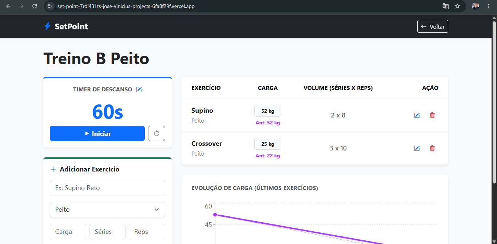
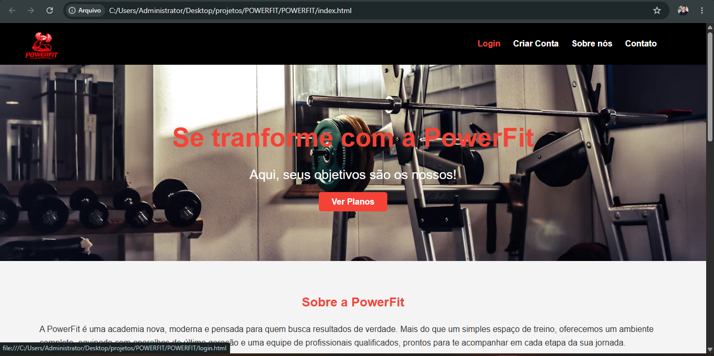

Olá! Sou estudante de Desenvolvimento de Sistemas no SENAI Areias, em Pernambuco. Há pouco mais de um ano venho mergulhando de cabeça no mundo da programação, transformando lógica e linhas de código em soluções reais. Durante esse período, construí uma base sólida e desenvolvi projetos práticos que me prepararam para os desafios do mercado. Sou apaixonado por tecnologia, movido pela curiosidade e estou em busca da minha primeira oportunidade profissional na área, pronto para agregar valor a uma equipe e continuar evoluindo todos os dias.
Formação técnica intensiva com foco em resolução de problemas reais. Durante o curso, desenvolvo projetos práticos englobando Front-end e Back-end, usando Banco de Dados e Lógica de Programação. Vivência diária com versionamento de código (Git/GitHub) e trabalho em equipe simulando o ambiente de mercado.

É uma aplicação web pensada para um restaurante fictício, com cardápio, tela de login e cadastro, contando também com a tela de admin.

Aplicação web voltada para o público da musculçaõ. Dentro dela, o usuário tem opção de criar suas próprias divisões de treino como também os exercícios que nele estão, contando com gráficos e estatísticas da evolução.
REACT.JS CSS BD SUPABASE Ver Projeto →
Apenas um Front-end que fiz aquase um ano, apenas pela experiência, sendo uma aplicação web de uma academia fictícia.
HTML CSS Ver Projeto →